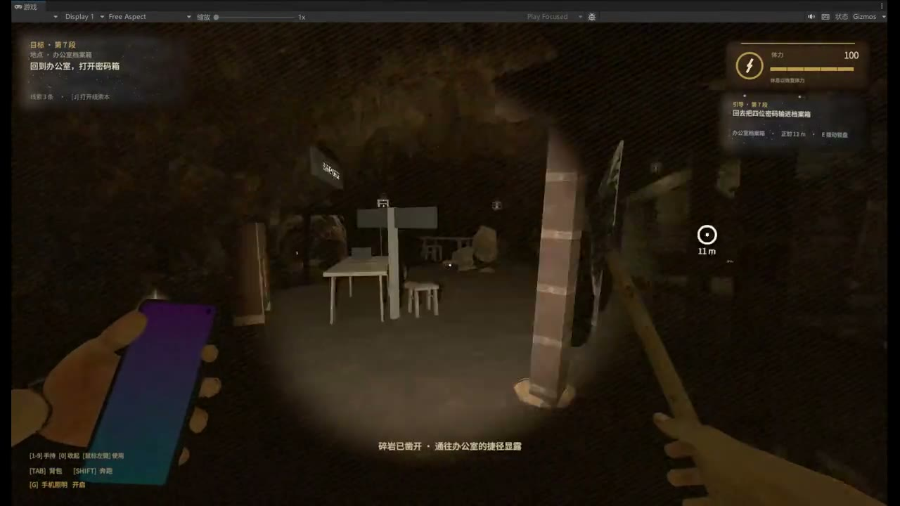
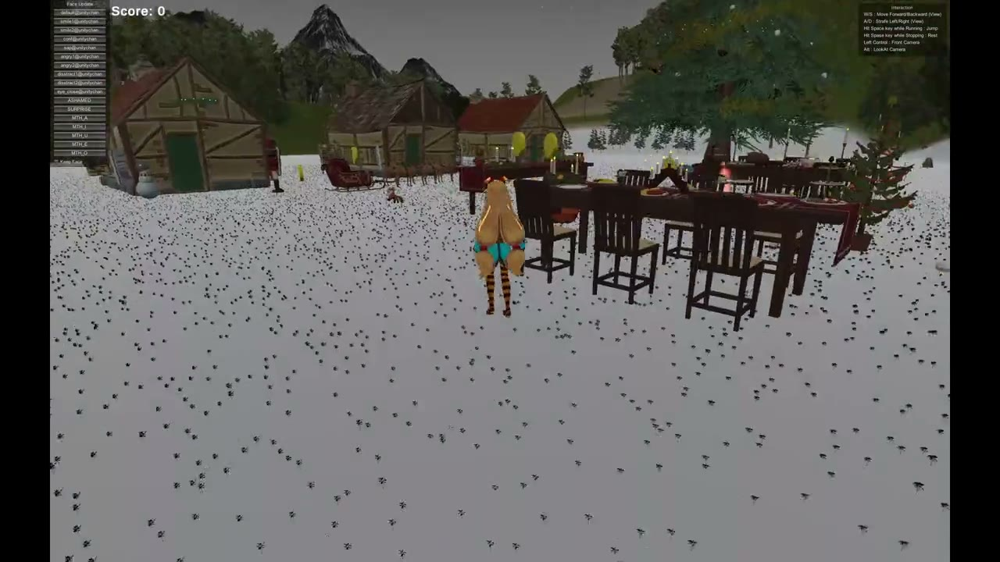
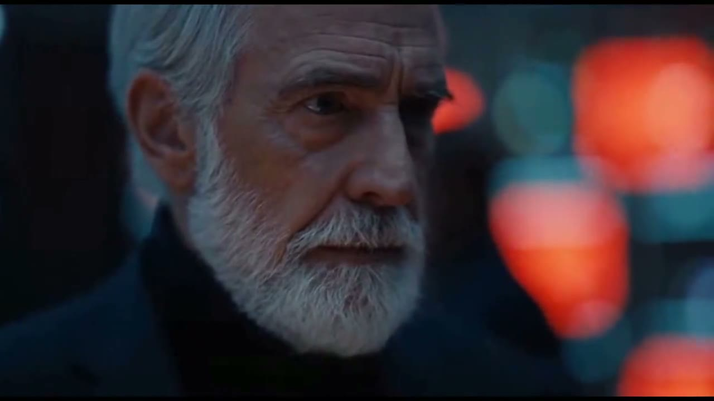
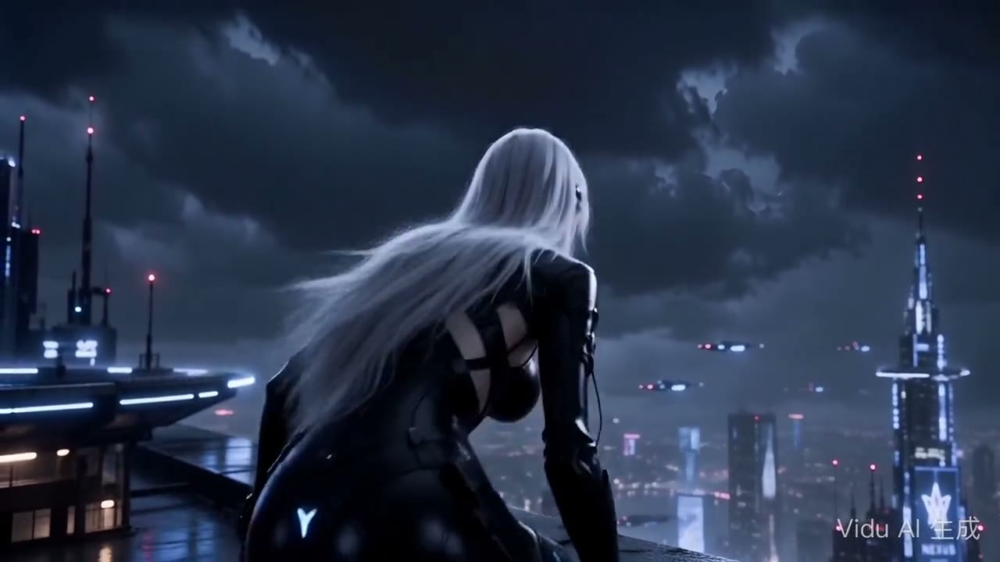
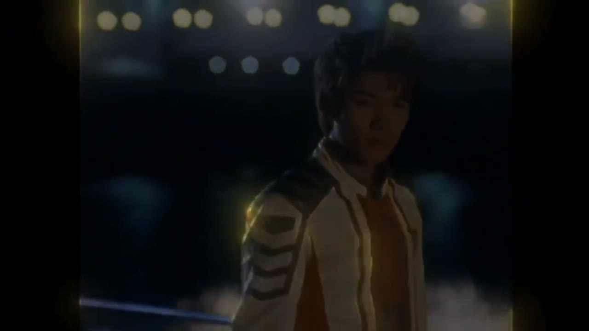
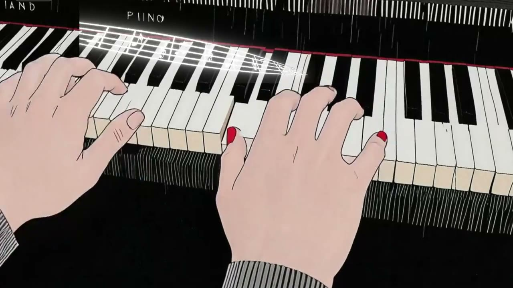

《洞穴 · 重见天明》
从一节地铁车厢跌进地下洞穴，手里只有手电和一台手机。照明范围决定你能看清什么，也决定你敢往哪走。地表与天井是两条不同的出口，对应两种结局。
- 完成度
- 约 15–20 分钟可通关，天井与地表两条结局线
- 玩法
- 双光源探索，拾取线索、合成道具、破解机关
- 关卡
- 地铁车厢 → 地下洞穴 → 地表 / 天井两条出口
- 技术
- 第一人称控制、射线交互、背包与合成、任务存档
- 分工
- 代码与贴图由 AI 生成；我负责提示与调试整合
两款能上手玩的 Unity 游戏，加一份没进开发的完整策划案。前两段是实机录屏，不是渲染动画——录的就是玩家实际会看到的画面。

从一节地铁车厢跌进地下洞穴，手里只有手电和一台手机。照明范围决定你能看清什么，也决定你敢往哪走。地表与天井是两条不同的出口，对应两种结局。

一只小狐狸在雪地村庄里捡金币。第三人称镜头跟着它跑过木屋、圣诞树和驯鹿雪橇，雪一直在下。捡够金币就过关，分数实时显示在左上角。
一款生存剧情游戏的完整策划案，11,000 字文档 + 22 页提案。世界设定埋在冰原之下，玩家要在极寒里管理体温、食物与装备，用不同的选择把剧情推向不同结局。设计做到系统、关卡与界面的可执行层面，但没有进入开发。
四支片子，AI 生成、实拍、动效三条线，全部自己完成分镜、剪辑、调色与混音。最后一张是 AI 内容项目，不是影片。

火箭升空、太空舰队、新闻发布会与直播弹幕交织的一条科幻线。剧本先拆成分镜表，用 Vidu 批量生成镜头再挑可用的；旁白和音效单独做，最后回 DaVinci 剪、调色、混音。
播放第二部分 · 2 分 51 秒 ↗
雨夜十字路口的一场伏击：一个人拦车，一个人拆监控，一个人切断钢索，最后抽走政客的意识数据。分镜先写到 20 个镜头，人物设定图用 ChatGPT，镜头用 Vidu 逐条生成，再按分镜剪、配雨声和低频。

从策划、分镜、实拍到成片独立完成。片头按音乐节拍点排关键帧。

钢琴键盘的按键与音乐节拍逐帧对齐，片头动效跟声音完全咬合。
用 GPT、可灵、即梦生成画面，负责后期和素材管理，成片已经通过媒体公司审核。同期还做过本地部署 GPT-SoVITS 的 AI 配音与翻唱，以及 ARKit / ARCore 原型。
用过的工具都在这里，没写的不代表会，写的就是能交付的。
Unity 2022.3C#、UGUI
C#与 Processing
第一人称控制、射线交互、背包、合成、任务与存档
Premiere、DaVinci、AE、剪映分镜、剪辑、调色
Vidu、可灵、即梦、Runway、Midjourney、GPT-SoVITS
Blender、C4D建模与动画
重庆对外经贸学院数字媒体技术专业，2023.09 入学，2027.06 毕业。
习惯是分镜写得清、细节改得动。做游戏时先想清楚玩家每一步在干什么，做片子时先想清楚观众第几秒会走神。愿意为了一个效果反复调，不太接受「差不多就行」。
课程里做过 Processing 交互设计和 Blender 建模，课后自己补 Unity 和 DaVinci。两款游戏、四支片子、一份策划案，都是从头到尾一个人做完的。